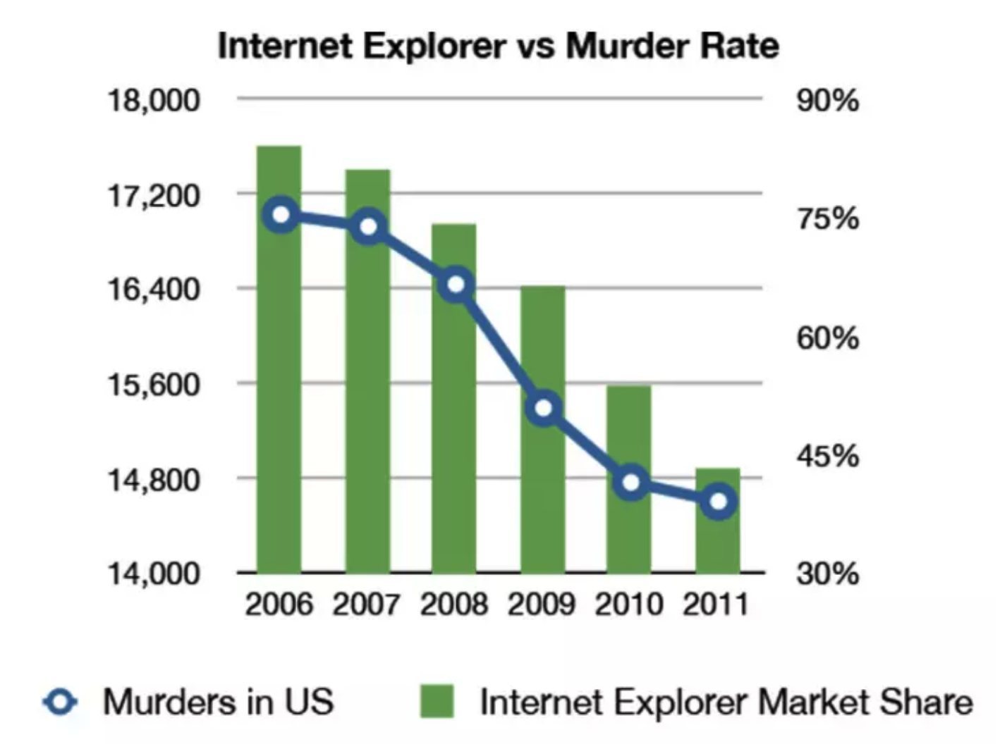

Jirabot
Солдатов Анатолий
-
Администрирование
-
Разработка -
Безопасность -
Архитектура -
CI/CD -
Работа с данными
Зачем нужна инфраструктура
Разработали крутой мессенджер, а его заблокировали или пытаются взломать
ГИС ЖКХ
Почти все регионы России, 125 миллионов лицевых счетов, десятки терабайт данных
Что общего у базиста и аналитика?
Правильный ответ
Данные. И тем и другим нужны данные.

Кому нужны данные?
Данные нужны всем (смотри предыдущий слайд). Но доступ только у инфраструктуры все идут к инфраструктуре.
-
Разработчик
Нужно разобраться, почему не работает поиск по сайту -
Аналитик
Нужно сделать отчет для министерства -
Поддержка
Нужны данные о руководителе организации для разбора обращения от пользователя
Прототип за ночь
(иногда даже работает)
Jirabot
1. Расширяемый под другие БД и задачи
2. Есть документация
3. Больше одного разработчика
JIRABOT
1. Расширяемый
2. Есть документация
3. Больше одного разработчика
PROFIT
Спасибо за ваше время!
Вопросы?